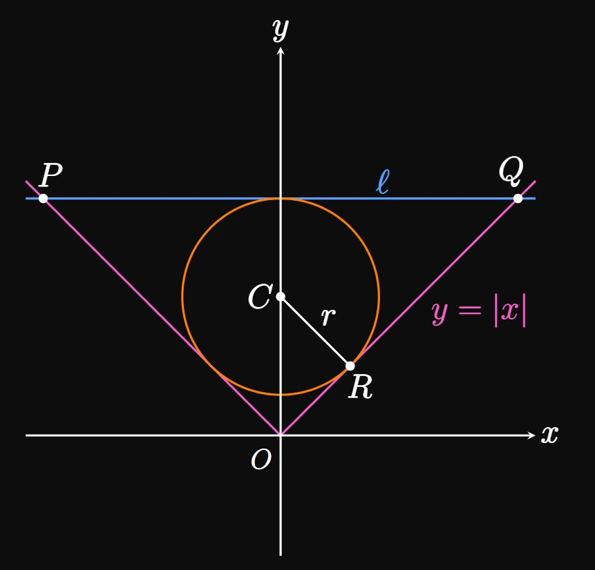

If \(f\) is differentiable at \(a,\) then calculate the following limit in terms of \(f'(a) \col\)
\[\lim_{x \to a} \frac{f(x) - f(a)}{\sqrt x - \sqrt a} \pd\]
Let \(R\) be the region in the first quadrant bounded between the coordinate axes and the
line tangent to the curve \(y = 1/x\) at any point \((a, 1/a).\)
Does the area of \(R\) depend on \(a \ques\)
Let \(k\) be a positive constant.
Line \(\ell\) is tangent to the curve \(f(x) = e^{kx}\)
at \(x = a\)
and strikes the \(x\)-axis at \((c, 0).\)
Calculate \(\lim_{k \to \infty} c.\)
Show that \(\lim_{k \to 0^+} c = -\infty.\)
What does this result mean geometrically?
Using differentials, approximate the amount by which \(c\) changes
as \(k\) increases from \(2\) to \(2.1.\)
With \(a\) held constant,
the value of \(k\) increases at a constant rate of \(2\) units per minute.
When \(k = 4,\) how quickly is \(c\) changing with time?
Is there a value of \(x\) at which the tangent lines to the graphs of \(f(x) = \tfrac{1}{4} x^4 + 12x,\)
\(g(x) = x^3 + 2x^2,\) and \(h(x) = 2x^2 + 27x + 2\) are all parallel to each other?
If so, then find this value of \(x.\)
A circle of radius \(r\) is centered at point \(C\) on the \(y\)-axis and is inscribed in the triangle formed by the graph of \(y = \abs x\)
and the horizontal line \(\ell,\)
as shown by Figure 1.
In terms of \(r,\) calculate the area of \(\Delta OPQ.\)
